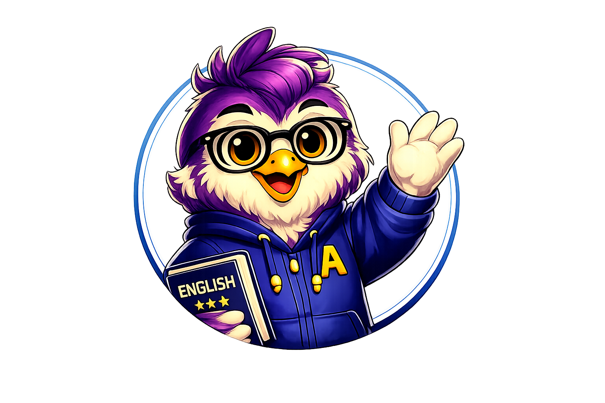

أجب عن الأسئلة بهدوء، وسيحدد لك النظام أفضل نقطة تبدأ منها في رحلتك التعليمية.
هذه الأسئلة لا تحدد مستواك، وإنما تساعدنا على التعرف عليك وتحسين تجربتك التعليمية.
يمكن تشغيل المقطع مرتين فقط.
يرجى الانتظار قليلًا، نقوم الآن بتحليل إجاباتك واختيار المستوى الأنسب لك.
سيظهر هنا وصف المستوى المناسب لك.